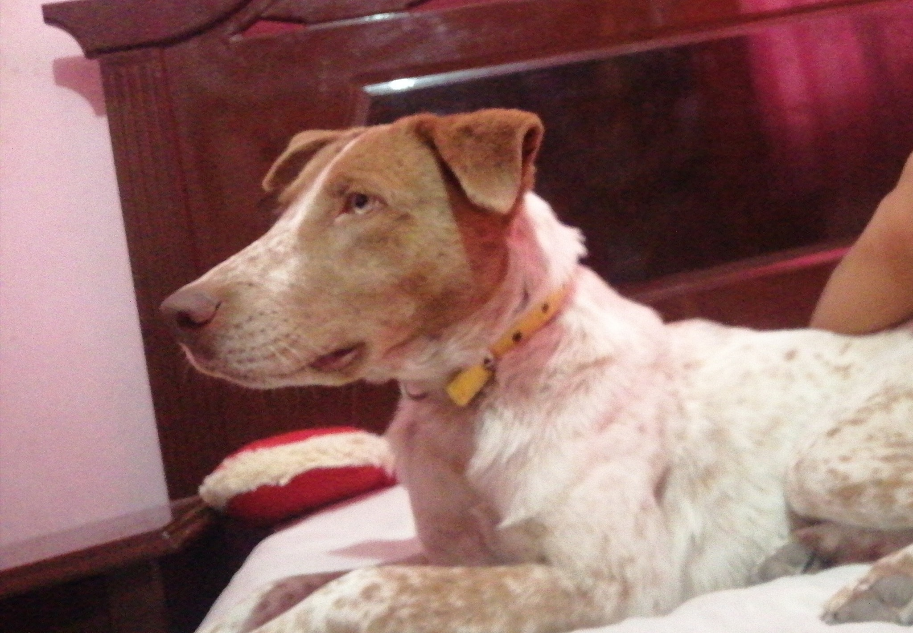
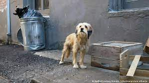

¿Estas interesad@?
NO CONTAMOS CON ALBERGUE, SOMOS UNA PLATAFORMA DE DIFUSIÓN Y APOYO EN RESCATE DE ANIMALES SIN HOGAR O EN SITUACIÓN DE MALTRATO POR ELLO MISMO EN NUESTRA PLATAFORMA COMPARTIMOS DIVERSAS PUBLICACIÓNES EN DONDE DAMOS A CONOCER A LOS SEGUIDORES A AQUELLOS ANIMALITOS QUE BUSCAN HOGAR Y EL CALOR DE UNA FAMILIA
Peluditos adoptados
Este es el cachorrito de una integrante del equipo dejando conocí a quien sería mi futura mascota, se encontraba chillando en la calle porque tenía hambre junto a sus hermanos y su mamá no les hacía caso, así que sali a verlos . Vivían en situación de calle pero igualmente era el perrito mestizo más bonito de entre ellos, no tenía mascotas y en cuanto lo vi sentí una sensación de que el sería mi próximo compañero y que aún si fuera macho o hembra le quería dar un hogar, además se me hizo chistoso porque tenía la cola mocha y era el único perrito blanco porque así hermanos eran negritos. Era el inicio de la pandemia y creo que quería compañía porque me sentía sola así que no dudé en intentar convencer a mi mamá para que lo metieramos a la casa y en cuanto a sus hermanitos intentar buscarles hogar porque justamente tenían poco más de un mes de nacidos, eran cachorros.

Nos contactaron en nuestra pagina con esta foto era un cachorro de aproximadamente cinco meses se mantuvo muy deshidratado por mucho tiempo comentan personas que lo vieron que un carro lo dejo en la calle a su suerte afortunadamente fue adoptado pocos dias despues de su rehabilitación

Bueno este peludito tiene una historia especial el equipo dejando huella encontro a este cachorrito en mal estado ,como tal fisicamente estaba muy delgado con sarna,garrapatas,no llevaba una buena alimentacion y tenia bajo peso,su patita estaba cortada y el equipo fue a rescatarlo rapidamente lo llevamos con el veterinario nos dijo que por su estado tenia muy pocas posibilidades de seguir con vida,sseguimos con un proceso de rehabilitación su recuperación fue pronta y despues de un mes fue adoptado.